https://github.com/alphaSeclab/awesome-rat.git
https://github.com/malwaredllc/byob.git
https://github.com/sweetsoftware/Ares.git
https://github.com/UBoat-Botnet/UBoat.git
https://github.com/sin5678/gh0st.git
https://github.com/alibawazeeer/rat-njrat-0.7d-modded-source-code.git
https://github.com/NYAN-x-CAT/RevengeRAT-Stub-CSsharp.git
各种隧道，加密（icmp隧道/dns隧道/ssh隧道/http隧道）
我们先介绍一下 ICMP协议，ICMP的内容是放在ip数据包的数据部分里传输的，ICMP是基于IP协议工作的，我们要区别于传输层，它仍然属于网络层协议。ICMP报文包含在IP数据报中，IP报头在ICMP报文的最前面。一个ICMP报文包括IP报头（至少20字节）、ICMP报头（至少八字节）和ICMP报文（属于ICMP报文的数据部分）。当IP报头中的协议字段值为1时，就说明这是一个ICMP报文。重点关注 Checksum 字段和Data字段，因为我们改变Data字段的时候，Checksum也要改变,我们把我们的payload或者数据放到Data字段里面即可.我们分别使用，Linux和Windows测试一下， Linux ping 发出的Data的内容为 ：!\"#$%&'()*+,-./01234567 ， Windows ping 的发出的Data的内容为 abcdefghijklmnopqrstuvwabcdefghi. 一般攻击者会把Payload放到Data 字段里面，返回的内容也放到Data里面。
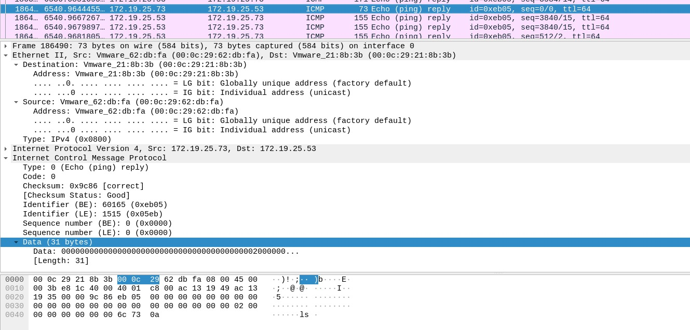
我们可以在 Data 里面可以看到一个ls
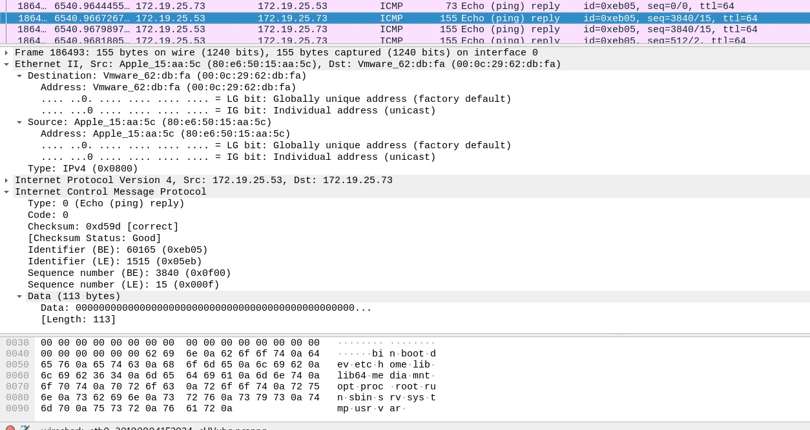
返回的系统目录数据是放到Data里面的
简单介绍一下 DNS协议，DNS协议是一个应用层协议，用来将域名转换为IP地址（也可以将IP地址转换为相应的域名地址），类似一个分布式数据库，数据通过udp传输,IP报头中的协议字段值为17.DNS隧道抓包如下：
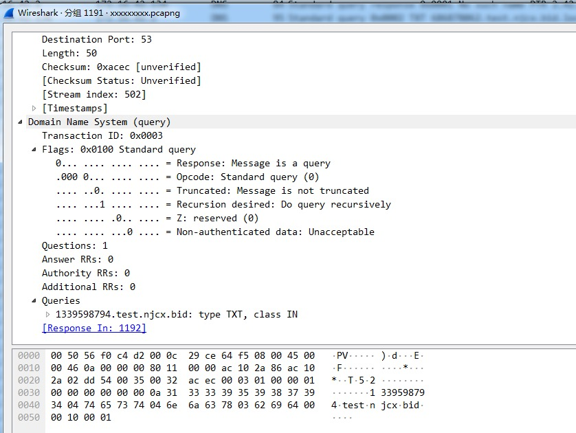
我在被控机上抓包，如图，可以看出受控机器一直TXT请求 CentOS 控制机
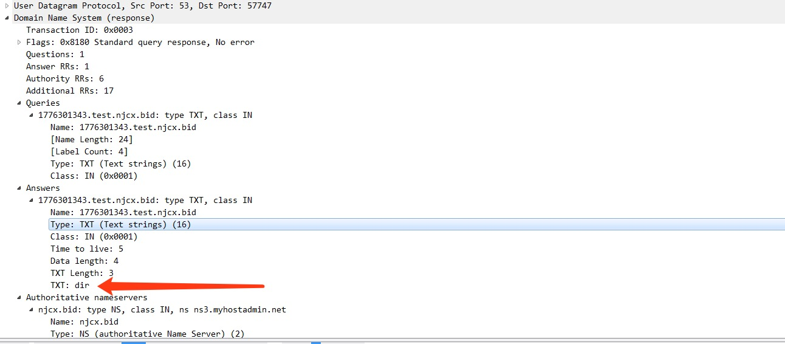
可以看出我们的payload是 放到TXT字段里面，由CentOS 控制机响应给客户端的
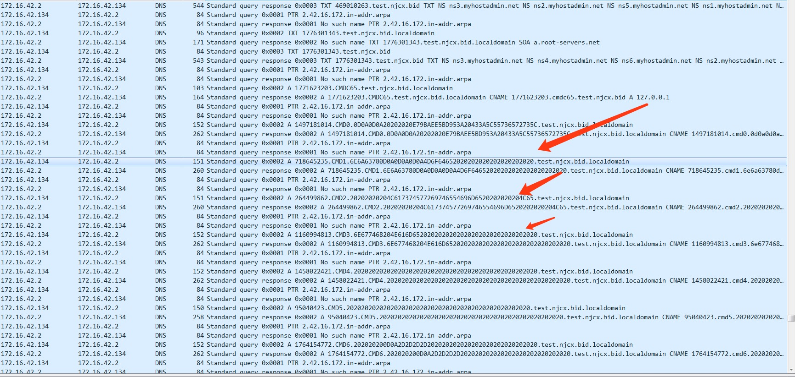
然后，数据都分段放到子域名里面，分多次，再次用请求的方式，发送到我们的控制机器上了
可以看出DNS隧道的一些特征
1， 请求的Type一般都是TXT（为了能够加入更多的信息）
2， payload部分一般都会编码（可能为base64、2进制或16进制）后放到子域名里面，而且多变，不一致
3， DNS发生频率很高，短时间为了发送大量数据，会产生大量请求
更多的内容，见本人的详细文章介绍，如下
NIDS(suricata)中的ICMP隐蔽隧道检测 https://www.freebuf.com/articles/es/243486.html
NIDS（suricata）中的DNS隐蔽隧道检测 https://www.freebuf.com/articles/network/244094.html
DGA 算法
DGA是恶意程序所使用的一种DNS技术，用于隐藏C2服务器。恶意软件通常使用它们来逃避基于域名的防火墙、NIDS拦截。使用DGA的恶意软件将不断尝试连接生成的DGA域名列表里面的域名，直到完成C2通信。DGA算法最早是在2008年的Conficker恶意软件中发现的。Conficker的第一个变体（变体A）每天使用日期作为种子来产生250个不同的域名。后来FBI进行了报复，逆向了Conficker，并注册恶意软件使用的所有域（真的假的？）。随着Conficker恶意软件的发展，引入了另外4种恶意软件变体（从B到E），变体C每天生成超过50,000个域，从中随机选择仅500个域以尝试与C&C服务器进行通信。
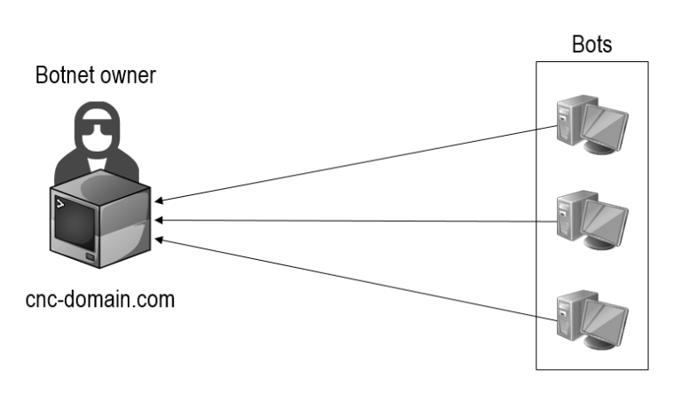
传统僵尸网络基础架构
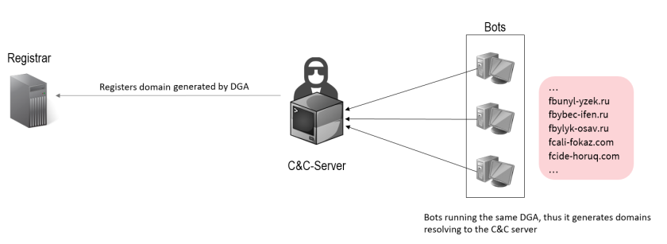
DGA僵尸网络基础架构
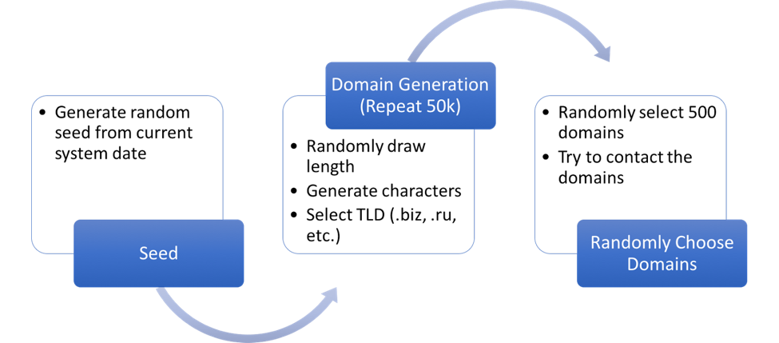
DGA算法生成逻辑
Banjori DGA 域名生成算法
def map_to_lowercase_letter(s):
return ord('a') + ((s - ord('a')) % 26)
def next_domain(domain):
dl = [ord(x) for x in list(domain)]
dl[0] = map_to_lowercase_letter(dl[0] + dl[3])
dl[1] = map_to_lowercase_letter(dl[0] + 2*dl[1])
dl[2] = map_to_lowercase_letter(dl[0] + dl[2] - 1)
dl[3] = map_to_lowercase_letter(dl[1] + dl[2] + dl[3])
return ''.join([chr(x) for x in dl])
seed = 'earnestnessbiophysicalohax.com' # 15372 equal to 0 (seed = 0)
domain = seed
for i in range(1000):
print(domain)
domain = next_domain(domain)
zfrpestnessbiophysicalohax.com
hdquestnessbiophysicalohax.com
umcuestnessbiophysicalohax.com
hrbyestnessbiophysicalohax.com
ysrtestnessbiophysicalohax.com
kgteestnessbiophysicalohax.com
hfsnestnessbiophysicalohax.com
njxfestnessbiophysicalohax.com
lpagestnessbiophysicalohax.com
kacuestnessbiophysicalohax.com
DGA的优点
1、使用DGA的僵尸网络有较为健壮的寻址方式，可对抗DNS域名黑名单拦截、态势感知系统以及特征码检测系统。
2、DGA是一种理想的备用信道，可作为back up手段恢复僵尸网络控制。
DGA的缺点
1、需要遍历DGA列表，寻址效率低。
2、大量NX Domain流量导致通信易被检测发现。
3、如果DGA数量过多，出于时间和金钱成本开销，攻击者难以全部注册，安全人员可以抢注并通过sink hole手段劫持僵尸网络
利用一些在线网站或者程序做为C2 Server或者中转C2 Server真实IP
比如， gmail，github，twitter，telegram等等
用Gmail 做C2 Server
https://github.com/maldevel/gdog
用Github 做C2 Server
https://github.com/maldevel/canisrufus
用telegram 做C2 Server
https://github.com/blazeinfosec/bt2
主要有两种玩法：
1， 直接做C2 Server
比如， getlook23使用GitHub Issues作为C2
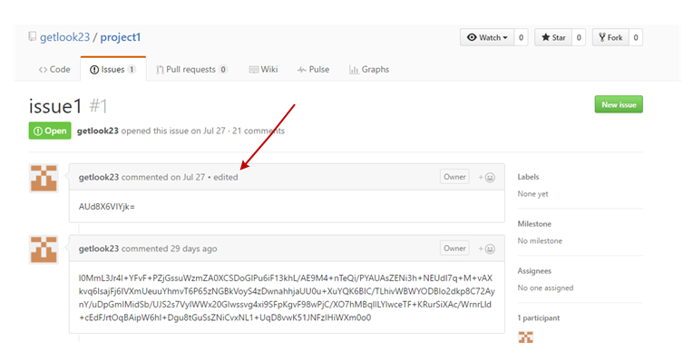
解析出来就是
1. whoami
2. "\r\nUser accounts for \\\\JOHN-PC\r\n\r\n-------------------------------------------------------------------------------\r\nAdministrator Guest John \r\nThe command completed successfully.\r\n\r\n----John"
3. "\r\nUser accounts for \\\\BEA-CHI-T-7PR01\r\n\r\n-------------------------------------------------------------------------------\r\n5upervisor Administrator Guest \r\nJohn Doe \r\nThe command completed successfully.\r\n\r\n----John Doe"
4. "john-pc\\administrator\r\n----Administrator"
5. "warzone1\\worker\r\n----worker"
6. "win7pro-maltest\\buf\r\n----BUF"
7. "anna-pc\\anna\r\n----anna"
8. "johnson-pc\\johnson\r\n----Johnson"
9. "klone-pc\\admin\r\n----admin"
10. "john-pc\\john\r\n----John"
11. "admin-win7\admin\r\n----Admin"
12. "admin-win7\admin\r\n----Admin"
13. "admin-win7\admin\r\n----Admin"
14. "warzone1\worker\r\n----worker"
15. "warzone1\worker\r\n----worker"
16. "warzone1\worker\r\n----worker"
17. "od-sploit\od\r\n----od"
18. "bea-chi-t-7pr01\john doe\r\n----John Doe"
2， 把C2 Server IP 或者Dns域名藏起来（比如，藏到repo里面），解析到真正的C2的地址
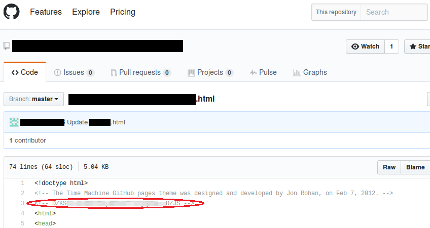
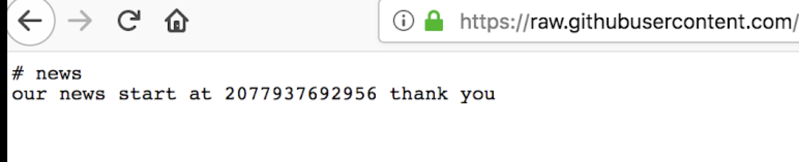